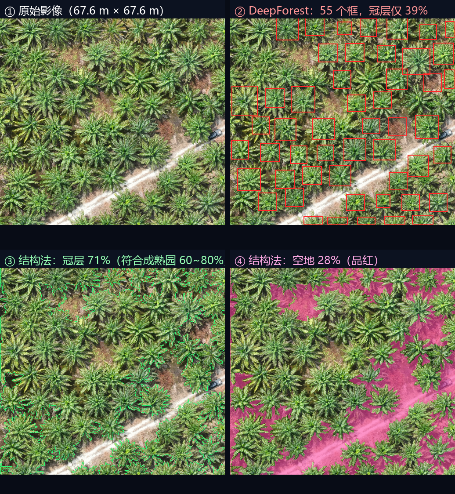

这不是拍脑袋换的方案。我把两个方法都跑在同一块真实影像上，用数据说话。下面讲清两者的原理、实测差距、以及各自的适用边界。
同一块影像、同一个窗口，两个方法的实测结果：
严重漏检。成熟油棕园应该有 60~80% 的冠层，它只认出 39%——差不多一半的树没被认出来。
置信度中位仅 0.40（正常模型应 0.7~0.95），说明模型自己都"没把握"。
正好落在成熟油棕园的合理区间。每株树冠的放射状边界都被正确描出，树冠之间的裸土被准确识别为空地。
耗时 1 秒，不需要训练数据、不需要标注、不需要 GPU。
两者的冠层覆盖率差了 32.5 个百分点。
按 DeepForest 的结果，会有大量真实空地被判成"已种树"而漏报——这正是补种管理最不能接受的错误。
一句话说清本质区别
DeepForest 是「用别人训练好的经验来认树」——它的经验来自北美和温带森林，和油棕园的差异太大，经验用不上。
结构法是「利用油棕园本身的结构特征来分树和地」——不需要任何经验，只需要知道"油棕冠层是连片的绿色，空地是红褐色裸土"这个物理事实。
它们属于 AI 视觉里两个完全不同的流派。
DeepForest 用的是目标检测（Object Detection）技术。它的工作方式是：
关键点：矩形框 ≠ 树冠轮廓
目标检测只能告诉你"这个矩形范围内有棵树"，它画不出树冠的真实形状。而油棕树冠是放射状的星形，用矩形框表示会多圈进大量背景。所以就算检测准确，也还需要再做一步"从框到精确轮廓"的分割（这正是 SAM2 的活儿）。
结构法不做"物体识别"，它做的是把影像按颜色分成两类：绿色植被 vs 非植被。核心是一个叫 ExG（超绿指数）的公式：
ExG = 2 × 绿 - 红 - 蓝这个公式的道理很朴素：绿色植物反射绿光多、反射红光和蓝光少。所以算出来 ExG 值大的地方就是植被，值小甚至为负的地方就是裸土、道路、阴影。
为什么用 ExG 而不是直接用"绿色通道"？
因为直接用绿光亮度会被光照强弱干扰——阳光强的地方整张图都亮，阴影处整张图都暗。ExG 是相对值（绿比红蓝高出多少），能在一定程度上抵消光照差异。
但光有 ExG 还不够，直接按阈值切会得到一堆碎渣（因为羽叶很细，叶子和叶子之间还有缝）。所以后面要接一串处理：
STEP 2 是整个方法的灵魂。 油棕羽叶很细，一棵树的叶子之间有空隙，直接看像素会以为"树冠不是连续的"。用高斯平滑（相当于给影像做一次模糊）把这些细缝抹掉，一棵树就变成一个实心块了。
不是它不好，是「经验用错了地方」。
DeepForest 的预训练权重是在北美和温带的森林上训练的——那些数据来自美国 NEON 生态观测网络，树是橡树、松树、枫树这类。它学到的"树冠长什么样"是那样的：
| 特征 | DeepForest 训练时见过的树 | 你的油棕 |
|---|---|---|
| 树冠形状 | 不规则的团块状、边缘毛糙 | 规整的放射状星形，羽叶向外呈扇形张开 |
| 树冠颜色 | 深浅不一的绿色，随季节变化大 | 高度统一的深绿到黄绿 |
| 种植方式 | 自然林，分布随机 | 人工成排种植，株行距 8.45 m 极规则 |
| 背景 | 林下植被、落叶、岩石 | 红褐色裸土、整齐的行间通道 |
| 拍摄高度 | 多为有人机或卫星，分辨率较低 | 无人机 3.3 cm/px，比训练数据精细得多 |
这些差异叠加起来，模型的"经验"就完全对不上了。它看到的油棕影像，在它眼里是一种从未见过的场景。
中位仅 0.40，范围 0.31~0.52。
正常的树冠检测模型，置信度中位通常在 0.7~0.95。这个数字说明模型对每一个判断都"心里没底"——它隐约觉得像树，但完全不确定。
检出 55 个框，但冠层覆盖率只有 39%。
意味着影像里大量真实存在的树冠完全没被框住。这些地方在后面"取补集"时会被判成空地——产生大量误报。
换个窗口，检出的框尺寸会大幅波动（有时中位宽 1.6 m，有时 5.7 m）。
真实油棕冠幅稳定在 7~9 m。输出忽大忽小，说明模型没有形成稳定的判断依据。

因为它利用的正是油棕园最显著、最稳定的那个特征：颜色差异。
站在油棕园上方看，画面只有两种东西：
这两者的颜色差异极大。实测这块影像的 ExG 分布：
| ExG 分位 | 数值 | 含义 |
|---|---|---|
| 最小值 | -46 | 最"不绿"的地方（深阴影） |
| 25% 分位 | 38 | |
| 中位 | 66 | 整体偏绿，符合植被覆盖的园区 |
| 75% 分位 | 91 | |
| 95% 分位 | 126 | 最浓密的冠层 |
| 最大值 | 221 |
植被和裸土在 ExG 上的差距达到 100 以上——这是一个非常容易分开的分布。相比之下，DeepForest 要区分的是"这棵树和那棵树"，难度高得多。
这是结构法能不能work的关键。油棕羽叶很细，如果直接按像素算 ExG：
一片叶子（绿，ExG 高）和它旁边的叶间缝隙（看到土，ExG 低）会交替出现。
结果：树冠内部变成"斑马纹"，一整棵树被切成几百个碎块，完全没法用。
高斯平滑把每个像素和周围像素做加权平均，等效于把细缝"糊"掉。
参数 sigma=5 表示平滑半径约 5 像素 = 16.5 厘米。这个尺度刚好能抹掉羽叶间的细缝，又不会把相邻两株树糊在一起（株距 8.45 m = 256 像素，远大于平滑半径）。
这个尺度选择不是巧合，而是利用了油棕园的几何特征
平滑半径必须满足：「羽叶缝隙宽度」 < 平滑半径 < 「株距」
实测羽叶缝隙约几厘米到十几厘米，株距 8.45 米。中间有两个数量级的安全空间，所以参数非常好调——这是人工种植园相比自然林的一个巨大优势。
取 ExG 的第 40 百分位作为分界线，意思是"把最绿的 60% 判为冠层"。这样做的好处是自动适应：
代价是：如果某块地真的只有 40% 是树（比如新开垦的园区），这个方法会强行把 60% 判成树。所以这个参数必须可调，不能写死。
同一块影像、同一个 2048×2048 窗口（67.6 m × 67.6 m），两个方法都跑一遍。
| 指标 | DeepForest 预训练 | 冠层结构法 | 哪个对 |
|---|---|---|---|
| 冠层覆盖率 | 39.0% | 71.5% | 结构法（成熟园应 60~80%） |
| 检测置信度（中位） | 0.40 | —（无此概念） | DeepForest 偏低，说明模型没把握 |
| 输出形式 | 矩形框（还要再做分割） | 直接得到像素级掩膜 | 结构法链路更短 |
| 处理耗时 | 约 37 秒 | 约 1 秒 | 结构法快约 30 倍 |
| 需要训练数据 | 需要（微调才能用） | 完全不需要 | 结构法 |
| 需要 GPU | 强烈建议 | 不需要（CPU 秒出） | 结构法 |
| 可解释性 | 黑盒，出错不知道原因 | 每一步都能看中间结果 | 结构法 |
| 跨园区稳定性 | 差（域偏移） | 中（阈值需重新校准） | 各有短板 |
关于「37 秒 vs 1 秒」这个对比要说明清楚
这里的耗时不是在比算法优劣——深度学习推理本来就需要几百毫秒到几秒，而阈值分割只要几十毫秒。这个差距是技术路线的固有属性，不是实现问题。
真正的意义在于：在精度还更差的情况下，还要付出 30 倍的时间成本，这就没有理由用 DeepForest 了。
结构法不是"更好的 DeepForest"，它们是不同场景的工具。
| 场景 | 推荐方法 | 原因 |
|---|---|---|
| 油棕园找空地（本项目） | 结构法 | 冠层与裸土色差极大，结构法够用且更快、更稳、可解释 |
| 需要区分相邻的树冠（数株数） | 结构法 + 分水岭 | 结构法只给"连片冠层"，要分株需再加实例分割步骤 |
| 林地里有大量非树地物 （杂草、灌木、其他作物） |
需要 AI 模型 | 结构法分不清"油棕"和"其他绿色植物"，只能分"绿 / 不绿" |
| 树冠与背景颜色接近 | 需要 AI 模型 | 色差小时阈值法失效，必须靠形状纹理特征 |
| 已经标注了本地数据 | 微调 DeepForest 后用 | 有本地数据后，域偏移问题被解决，AI 模型精度会超过结构法 |
本项目的推荐路线：两条腿走路
现在（v1）：用结构法。马上能出可用结果，不需要标注数据、不需要 GPU、参数可解释可调。
将来（v2）：当你攒够了本园区的标注数据（大约 50~200 张切片），再用它微调 DeepForest 或别的分割模型。那时候模型见过你的油棕了，域偏移问题消失，精度会超过结构法——尤其能解决"杂草被误判成树冠"这类结构法搞不定的问题。
两条路线不冲突：结构法的结果可以直接拿来当标注的初稿，人工只需要修正，能省掉大量标注时间。
结构法不是银弹，这些地方它确实不如 AI 模型。
它只知道"这里绿"，不知道"绿的是不是油棕"。园区里的杂草、灌木、其他作物都会被判成冠层。
影响：如果某块地长满杂草但没种树，结构法会认为那里"有树"，从而漏报空地。
分位阈值（默认 40%）在不同园区、不同季节可能需要重调。
影响：换一个园区，可能需要人工调一次参数。这是"没有学习能力"的代价。
幼树冠层还没连片，颜色也浅，容易被判成空地。
影响：刚补种不久的区块可能被重复报告为"需要补种"。
深阴影处 ExG 很低，可能被判成空地；道路、排水沟也会被判成空地。
影响：需要靠"最小宽度/最小面积"过滤掉这些线性地物（下一份文档会讲）。
这些局限怎么兜底